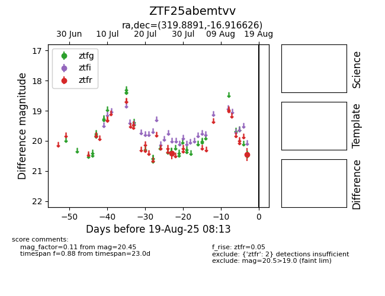

Target ZTF25abemtvv at 2025-08-19 08:13, see:
FINK: fink-portal.org/ZTF25abemtvv
Lasair: lasair-ztf.lsst.ac.uk/objects/ZTF25abemtvv
ALeRCE: alerce.online/object/ZTF25abemtvv
alt names
ZTF25abemtvv (ztf,fink)
coordinates:
equatorial (ra, dec) = (319.8891,-16.91663)
galactic (l, b) = (33.2136,-40.20063)
photometry
last ztfr=20.45
2 ztfr detections
